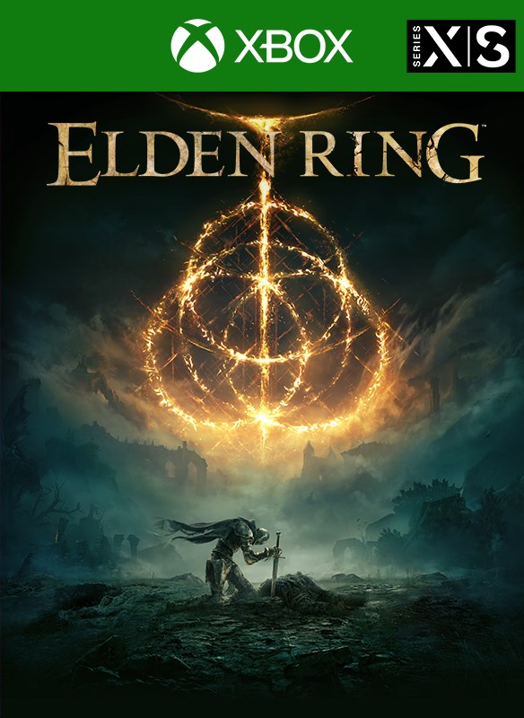
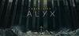

Ranking de los mejores videojuegos
Encuentra los 10 mejores juegos según la opinión de los usuarios.
Encuentra los 10 mejores juegos según la opinión de los usuarios.
| Nota y puesto | Juego |
|---|---|
|
1 9.82  |
Elden Ring X-BOX OneElden Ring es un videojuego de rol, aventura y acción de FromSoftware y Bandai Namco, creado por Hidetaka Miyazaki y George R.R. Martin. |
|
2 9.67  |
Elden Ring PCElden Ring es el nuevo videojuego de rol, aventura y acción de FromSoftware y Bandai Namco. Ideado por Hidetaka Miyazaki y George R.R. Martin, el escritor de Canción de hielo y fuego, nos llevará a un mundo convulso, complejo y sangriento. En esta ocasión, el equipo de Dark Souls ha aumentado la escala del título, trasladando y depurando su conocida jugabilidad a una nueva dimensión. Personalización, armas, armaduras y objetos mágicos se darán la mano con una desafiante dificultad, jefes finales y criaturas horripilantes. |
|
3 9.67 |
Persona 5 Royal PS4Persona 5: Royal es la versión extendida y mejorada del exitoso videojuego del rol japonés producido por ATLUS para consolas. La quinta entrega tiene ahora una nueva edición que, si bien nos sigue contando una épica historia en la que un grupo de estudiantes adolescentes tendrán que enfrentarse a una amenaza sobrenatural gracias a sus Persona, unos alter ego especiales, añadirá nuevas zonas, personajes y características jugables. |
|
4 9.67  |
Red Dead Redemption 2 XBOneRed Dead Redemption 2 es la secuela del aclamado Red Dead Redemption de 2010 y tercera parte de la saga Red Dead, que se inició en 2004 con Red Dead Revolver. De nuevo nos lleva al salvaje oeste para proponernos convertirnos en un pistolero forajido en un gran escenario de juego. |
|
5 9.64 |
Persona 5 Royal SwitchPersona 5: Royal es la versión extendida y mejorada del exitoso videojuego del rol japonés producido por ATLUS para consolas. La quinta entrega tiene ahora una nueva edición que, si bien nos sigue contando una épica historia en la que un grupo de estudiantes adolescentes tendrán que enfrentarse a una amenaza sobrenatural gracias a sus Persona, unos alter ego especiales, añadirá nuevas zonas, personajes y características jugables. |
|
6 9.63  |
Half-Life: Alyx PCHalf-Life: Alyx es el nuevo shooter de acción y aventura en primera persona para PC desarrollado por Valve, en esta ocasión en exclusiva para la realidad virtual. En esta secuela, que ocurre justo antes de Half-Life 2 de forma cronológica, conoceremos la historia de Alyx Vance, la hacker de la segunda entrega, invitándonos a luchar contra los Combine en el entorno opresivo y postapocalíptico. Diseñado para la realidad virtual, es compatible con Valve Index, el headset de la empresa. |
|
7 9.62  |
Red Dead Redemption 2 PS4Red Dead Redemption 2 es la secuela del videojuego de éxito de Rockstar Red Dead Redemption (2010), considerado como uno de los mejores títulos de la compañía. Se trata de la tercera entrega de la saga Red Dead, iniciada en 2004 con Red Dead Revolver y nos trasladará de nuevo al Salvaje Oeste para ponernos en el escenario de mundo abierto más grande jamás creado por los padres de Grand Theft Auto y contarnos una historia sobre forajidos, venganza y atracos en un escenario de gran realismo en PlayStation 4 y Xbox One. |
|
8 9.6  |
Elden Ring: Shadow of the Erdtree PC |
|
9 9.57  |
Baldur's Gate 3 PCBaldur's Gate 3 es la tercera parte de la emblemática saga de videojuegos de rol Baldur's Gate. Considerada como una de las series más influyentes de la historia, en esta ocasión, los encargados de darle vida son los desarrolladores de Larian Studios, creadores de Divinity, prometiendo gran fidelidad a los manuales de Dragones y Mazmorras en su quinta edición, así como a la serie que dio origen a al rol occidental más puro en los videojuegos. |
|
10 9.57  |
The Legend of Zelda: Tears of the Kingdom SwitchThe Legend of Zelda: Tears of the Kingdom es el nuevo videojuego para Nintendo Switch de la saga de juegos de The Legend of Zelda, secuela directa de Breath of the Wild. Protagonizada por Link, y con una jugabilidad basada en la acción y el rol en mundo abierto, esta aventura nos devuelve a Hyrule con una búsqueda de la Princesa Zelda que cuenta con mecánicas de fusión de objetos y armas más avanzadas, nuevas zonas por explorar en los cielos y mucho más. |
Para más información: Ver más...